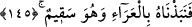
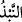
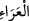
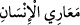
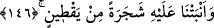
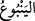
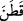
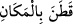
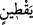

“Yunus (a.s.) balığın karnında tesbih etti. Melekler onun tesbihini işittiler ve “Ey
Rabbimiz! Garip bir yerden zayıf bir ses duyuyoruz. Bu nedir?” dediler. Allah Teâlâ:
“O benim Yunus kulumdur. Bana âsî oldu, ben de onu balığın karnında hapsettim”
buyurdu. Melekler: “Yunus her gün ve her gece kendisinden sana salih amel yükselen
salih bir kuldur” diyerek Yunus (a.s.)’a şehadet ve şefaat ettiler. Allah Teâlâ balığa
emretti balık da Yunus (a.s.)’ı Rebia diyarında merkezi bir belde olan Nusaybin
yurduna atıverdi.”
145. Halsiz bir vaziyette kendisini dışarı çıkardık.
Balığın karnında bulunmasından dolayı “Halsiz” ve hasta “bir vaziyette kendisini
dışarı çıkardık.”
“
”, değersiz olduğu için bir şeyi kaldırıp atmaktır. “
”, sütresi olmayan açık
yerdir. Yani ahali ve orada bulunan halkı gölgelendirecek ağaç ve binalar olmadığı için
boş ve açık sahra, sâhil ve vâdilere denilir. “
”, insanın açık uzuvları yani her
zaman açık olabilen el, yüz ve ayaktır. “Dışarı çıkardık” ifadesindeki “Biz çıkardık”
sözündeki isnat mecazdır. Yani Yunus (a.s.)’ı ot, yaprak, ağaç gibi kendisini örtecek bir
şey bulunmayan bir yere bırakması için balığı sevk ettik, demektir. Yunus (a.s.)’ın
bedeni çocuğun ilk doğduğu andaki hali gibi kuvvetsiz oldu. Yahut, Yunus (a.s.)’ın eti
eridi, saçları döküldü, tüysüz ve kanatsız kuş yavrusu gibi oldu. Kemiği incelip kıkırdak
gibi hassas, narin ve zayıf bir hale geldi. Artık bu hassas bedenle güneşin sıcağına ve
rüzgarın esmesine takat getiremiyordu.
Bu âyetin işârî yorumu şudur: Kalb, nefis zindanından ve dünya denizinden kurtulsa da
nefisle olan komşuluğu ve arkadaşlığı ve nefsin huy ve tabiatından kapmış olduğu şeyler
sebebiyle kendi öz kalbî mîzacında meydana gelen meyil ve sapmadan dolayı yine
hastadır.
146. Ve üstüne (gölge yapması için) kabak türünden geniş yapraklı bir nebat
bitirdik.
“Ve üstüne (gölge yapması için) kabak türünden geniş yapraklı bir nebat bitirdik.”
“
” kelimesinin “ ” kelimesinden geldiği gibi
kelimesi de “
”
kelimesinden türetilmiştir. Kişi bir yerde ikamet edince “
” denilir.
kelimesi kabak, karpuz, hıyar, acur, ebûcehil karpuzu ve benzeri geniş yapraklı ve